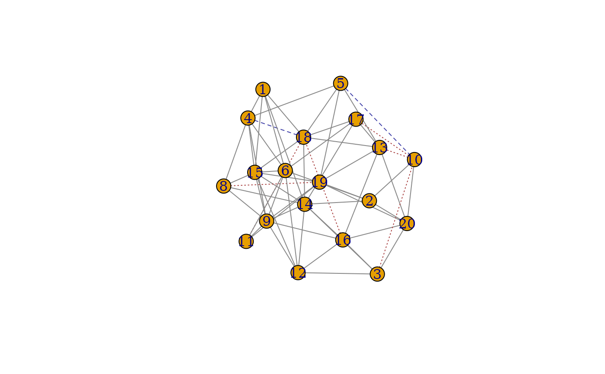
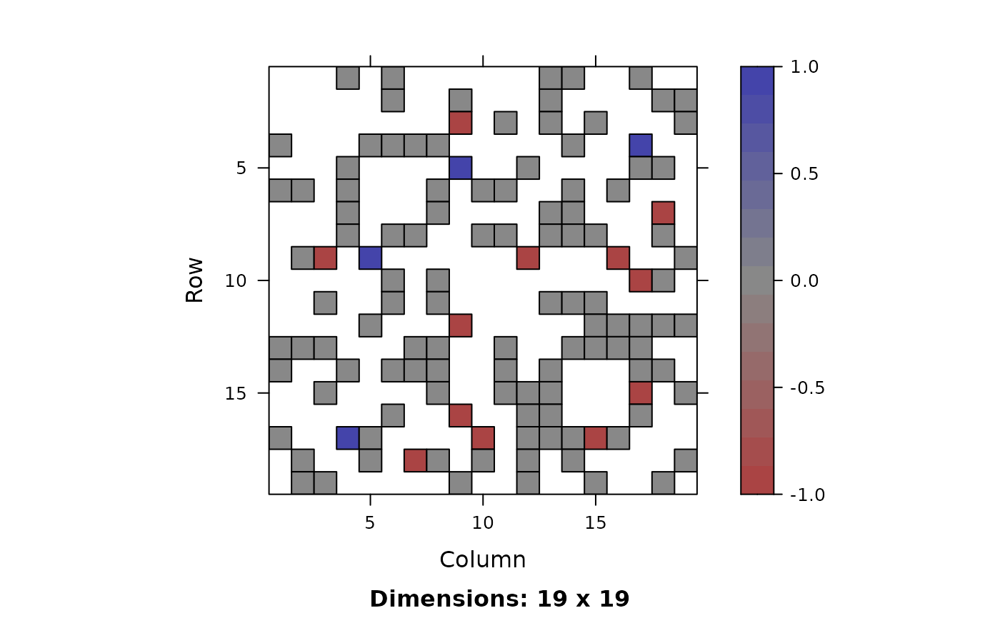

Two functions are provided, match_plot_igraph
which makes a ball and stick plot from igraph objects
and match_plot_matrix which shows an adjacency
matrix plot.
# S4 method for igraph,igraph
plot(x, y, match = NULL, color = TRUE, linetype = TRUE, ...)
# S4 method for Matrix,Matrix
plot(x, y, match = NULL, col.regions = NULL, at = NULL, colorkey = NULL, ...)First graph, either an igraph object or a Matrix
second graph, either an igraph object or a Matrix
result from a match call. Requires element
corr as a data.frame with names corr_A, corr_B.
Whether to color edges according to which graph(s) they are in.
Whether to set edge line types according to which graph(s) they are in.
additional parameters passed to either the igraph plot function or the Matrix image function.
NULL for default colors, otherwise see image-methods
NULL for default at values for at (ensures zero is grey), otherwise see image-methods
NULL for default colorkey, otherwise see image-methods
Both functions return values invisibly.
match_plot_igraph returns the union of the
matched graphs as an igraph object with additional
edge attributes edge_match, color, lty.
match_plot_matrix returns the difference between
the matched graphs.
Grey edges/pixels indicate common edges, blue indicates edges only in graph A and red represents edges only graph B. The corresponding linetypes are solid, long dash, and short dash.
The plots can be recreated from the output with the code plot(g)
for g <- match_plot_igraph(...) and col <- colorRampPalette(c("#AA4444", "#888888", "#44AA44")) image(m, col.regions = col(256))
for m <- match_plot_match(...).
This only plots and returns the matched vertices.
set.seed(123)
graphs <- sample_correlated_gnp_pair(20, .9, .3)
A <- graphs$graph1
B <- graphs$graph2
res <- gm(A, B, 1:4, method = "percolation")
plot(A, B, res)

plot(A[], B[], res)
